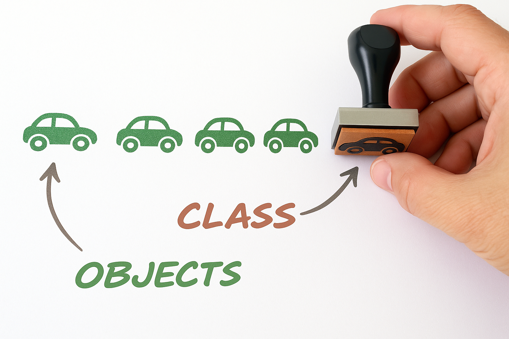

Object-oriented Programming in Python #
Paolo Bonfini, 2025. All rights reserved.
This work is the intellectual property of Paolo Bonfini. All content produced in this notebook is original creation of the author unless specified otherwise. Unauthorized use, reproduction, or distribution of this material, in whole or in part, without explicit permission from the author, is strictly prohibited.
This notebook introduces to the concept of “object-oriented programming” in Python, and shows how this is applied in scikit-learn, which is the main library that will be used during the course.
The contents of this class will not be strictly subject to examination, but constitute a fundamental knowledge to understand the rest of the class. Therefore, make sure that the concepts presented here are within your grasp.
Classes and Objects#
You can think of classes as “stamps”.
Similarly, you can think of objects are the things that the stamps can print on a paper.
\(\rightarrow\) We usually say that objects are instances of a class
{kind=link}
In other words, a class represents a “template” that can create an arbitrary number of duplicates (objects) which possess the same structure.
Let’s have a look at a very basic class definition:
class Car():
'''
We define a class "Car", that we will later use to "print" cars.
NOTE: Class names usually start with upper-case letters, while their
objects use only lower-case letters.
'''
def __init__(self, color):
'''
The `__init__` method is used to initialize the properties of the objects.
In this case, we use it to initialize the property "color".
As you can see, this function takes as additional input `self`, which
is a special "parameter" saying that we are working with an instance
of a class.
'''
self.color = color
'''
Here we are saying:
"Take the input color, and make it an attribute of the object"
'''
Let’s see how to instantiate (create) an object:
car_1 = Car('red')
'''
Notice that the `__init__` method is called implicitly!
We passed the color "red" to the "Car" class, and automatically `Car` forwards
it to `__init__`.
This always happen when we instatiate an object with some properties.
''';
# We can access the attributes simply by calling them:
car_1.color
'red'
Objects of a class are similar (after all they come from the same “printer”), but not identical!
Each object has its own properties, e.g.:
car_2 = Car('green')
print('Car 1 is:', car_1.color)
print('Car 2 is:', car_2.color)
Car 1 is: red
Car 2 is: green
type(car_2)
__main__.Car
Once created, each object can be modified independently from the other objects:
# If you ever played GTA, you know that sometimes you need to change the color
# of your car because of ... erhm ... reasons.
car_1.color = 'yellow'
car_2.color = 'purple'
print('Car 1 is now:', car_1.color)
print('Car 2 is now:', car_2.color)
Car 1 is now: yellow
Car 2 is now: purple
Attributes and Methods#
As we saw, classes contain attributes, which are the [modifiable] properties of the objects.
But they can also contain methods, i.e., functions that operate on the object itself.
Functions VS Methods#
To best explain methods, let’s compare it againsta a “classical” function.
Let’s first pretend we don’t know how to use classes. Then, to define a car and its color, we can use a dictionary.
car_1 = {'color': 'red'}
car_2 = {'color': 'green'}
To change a car’s color with a function, we could simply do this:
def change_car_color(car, new_color):
'''
`car` is the generic input dictionary.
`new_color` is the color we want to change to.
'''
car['color'] = new_color
return car
# Let's apply the function:
car_1 = change_car_color(car_1, 'yellow')
car_2 = change_car_color(car_2, 'purple')
print('Car 1 is now:', car_1['color'])
print('Car 2 is now:', car_2['color'])
Car 1 is now: yellow
Car 2 is now: purple
Let’s now do the same using a class with a dedicated method
(which, afterall, is just a standard function but placed inside a class)
class Car():
def __init__(self, color):
self.color = color
def change_color(self, new_color):
'''
Notice that now we don't need `car` as an input
--> the method knows that we will apply it to `self`!
'''
self.color = new_color
# Let's instantiate the objects and apply the methods:
car_1 = Car('red')
car_2 = Car('green')
car_1.change_color('yellow')
car_2.change_color('purple')
'''See? We only need to pass the new color!''';
print('Car 1 is now:', car_1.color)
print('Car 2 is now:', car_2.color)
Car 1 is now: yellow
Car 2 is now: purple
Why we need classes?#
They are convenient \(-\) the more you use them, the more you will understand.
Here are a few examples.
To compact your code#
As we saw with the car color, we can place all the code regarding “cars” into the Car class.
\(\rightarrow\) When we need to search our code for functions applying to cars, we know where to look
(Trust me, this is extremely useful for big projects with lots of code)
\(\rightarrow\) Allows to create compact documentations as well
(see later,scikit-learndocs)
To carry around lots of info without re-typing#
Let’s say I want to initialize many objects with the same properties:
import numpy as np
class Car():
def __init__(self, color):
self.color = color
self.manifacturer = 'Hyundai'
self.year_production = 1995
self.doors = 4
self.engine = '1400cc'
self.power = '100kW'
# Instantiating 10 cars with random colors:
cars = {}
for i in range(10):
random_color = np.random.choice(['yellow', 'blue', 'purple', 'teal', 'green'])
cars[i] = Car(random_color)
# Now accessing the attributes of car #5:
attributes_and_values = vars(cars[5])
#
for attribute, value in attributes_and_values.items():
print(attribute, ":", value)
color : teal
manifacturer : Hyundai
year_production : 1995
doors : 4
engine : 1400cc
power : 100kW
To easily invoke functions that change with the object#
SPOILER: This is the property most exploited by scikit-learn.
Let’s say we want to create a model that changes with \(\alpha\) and \(\beta\), e.g.: $\(y = \alpha x + \beta\)$
and assume we want to execute this in a loop of 10 iterations, where \(\alpha\) and \(\beta\) are taken at random.
Basically we will have to evaluate 10 slightly-different models (every couple (\(\alpha\), \(\beta\)) give rise to a different model)
We want to
Inside the loop:
A) evaluate each model performance
B) keep the best model we find
Outisde the loop:
apply a final calculation using the best model we found
import numpy as np
np.random.seed(42)
# Data:
class Model():
def __init__(self, alpha, beta):
self.alpha = alpha
self.beta = beta
def assess_performance(self, x):
'''
Fake method for demonstration purposes.
Returns a random number between 0 and 1.
'''
return np.random.rand()
def predict(self, x):
'''
This predicts y by calculating:
alpha * x + beta
Notice that we do not need to pass `alpha` and `beta`, because we can
already access them via `self` --- And this is the trick!
'''
y = self.alpha * x + self.beta
return y
# Some data:
x = np.array([5,4,6,4,5,7,3,6,8,3,6,8,3])
# Sampling 10 random parameter couples (alpha, beta) and checking for best model:
for i in range(10):
alpha = np.random.choice([0,1,2,3,4,5,6,7,8])
beta = np.random.choice([0,1,2,3,4,5,6,7,8])
model = Model(alpha, beta)
'''1.A - Evaluate each model performance'''
performance = model.assess_performance(x)
'''1.B - Keep the best model we find'''
# (yes, not the best criterion, it's just an example ...)
if performance > 0.8:
best_model = model
'''2 - Apply a final calculation using the best model we found.'''
best_model.predict(x)
# Notice that `best_model` is itself an instance of class `Model`, therefore
# it has a `predict()` method
array([16, 14, 18, 14, 16, 20, 12, 18, 22, 12, 18, 22, 12])
In this case, we didn’t have to keep track of the best
alphaandbeta
\(\rightarrow\)We just had to storebest_model, and all properties and methods are carried along!
# Show the selected model's parameters:
vars(best_model)
{'alpha': np.int64(2), 'beta': np.int64(6)}
Exercise [30 min]
Objective: Write an object-oriented code to manage the customers of an online store.
Every time a customer buys a product, the cost of that product increases for that customer.
Task: You will be given the default product_costs, which are all equal to 1, at the begininning.
You will have to do the following.
Write a class that:
initializes a customer with the default
product_costshas a
buy()methodEvery time a customer buys a product, the cost of that product increases for that customer. which takes as an input the name of a product, and the only thing it does is to call forincrease_price()has an
increase_price()method which takes as an input the name of a product, and it increases its price by +1
Instantiate a custumer object, and:
make it “buy” 3 times the same product
display the final price the customer sees
Hints:
When you invoke internal attributes inside a class, remember to use
self, e.g.:self.product_costsThe same goes for methods, so when
buy()calls forincrease_price(), it should be something like:self.increase_price()
'''Uncomment the lines, and replace "..." with the proper code''';
# product_costs = {'tomatoes': 1, 'phone': 1, 'socks': 1}
# class Customer():
# def ... # define __init__() method
# def ... # define buy() method
# def ... # define increase_price() method
# customer = ... # instantiate customer
# ... # customer buys 3 times the same product
# print('Final cost of products:', ...)
Our solution
Sklearn (a.k.a. scikit-learn)#
Scikit-learn is a python library for Machine Learning and related tasks:
Calssification
Regression
Clustering
Dimensionality Reduction
Model selection
Preprocessing
Classes in sklearn#
Sklearn is heavily based on object-oriented programming …
# Let's generate some random data:
X = np.array([[0], [2], [3], [4], [5]])
y = [0.2, 0.4, 0.5, 0.8, 0.9]
from matplotlib import pyplot as plt
plt.figure(figsize=(3,3))
plt.scatter(X, y)
plt.show()
from sklearn.linear_model import LinearRegression
'''Importing a [sub-]package class (a linear model, in this case).'''
model = LinearRegression()
'''Instantiating an object of `LinearRegression` class.'''
model.fit(X,y)
'''Invoking the `fit` method of `LinearRegression`, which will find the best
fit line through X and y.'''
'''Predicting the y values using the fitted model, using the `predict` method
of `LinearRegression` class.'''
yhat = model.predict(X)
# Let's plot data and results:
from matplotlib import pyplot as plt
plt.figure(figsize=(3,3))
plt.scatter(X, y, c='C0', label='original data')
plt.scatter(X, yhat, c='tomato', label='predicted values\nfor the corresponding x')
plt.plot(X, yhat, c='tomato', label='model')
plt.legend(bbox_to_anchor=(1.1, 1.05))
plt.show()
NOTE: sklearn methods always expect as an input X a 2D-array (y may be 1D).
So, when they are not, we need to ‘pretend’ they are. That is why we defined X as:
X = np.array([[0], [2], [3], [4], [5]])
X.shape
(5, 1)
and not the more “obvious”:
X_obvious = np.array([0, 2, 3, 4, 5])
X_obvious.shape
(5,)
If we inspect their shapes, we see:
print('Shape of NOT-sklearn-compliant X:', X_obvious.shape)
print('\tThis array has %s elements' % X_obvious.shape[0])
print('Shape of sklearn-compliant X:', X.shape)
print('\tThis array also has %s elements, but each of them has explicit dimension %s' % (X.shape[0], X.shape[1]))
Shape of NOT-sklearn-compliant X: (5,)
This array has 5 elements
Shape of sklearn-compliant X: (5, 1)
This array also has 5 elements, but each of them has explicit dimension 1
It is just a matter of format \(-\) in this case they are the exact same data.
This only matter when X has more than 1 dimension, e.g. is 2D:
from matplotlib import pyplot as plt
fig = plt.figure(figsize=(3,3))
ax = fig.add_subplot(projection='3d')
ax.view_init(elev=20, azim=20)
X = np.array([[0, 0.2], [2.1, 2], [3.5, 3], [4, 4.7], [5.2, 5.9]])
y = [0.2, 0.4, 0.5, 0.8, 0.9]
ax.scatter(X[:,0], X[:,1], y)
ax.set_xlabel('X$_0$')
ax.set_ylabel('X$_1$')
ax.set_zlabel('y')
plt.show()
Sklearn consistency#
Sklearn is extremely consistent with its syntax and class definitions.
For example, all its regression models share the same syntax:
from sklearn.linear_model import LinearRegression
#
model = LinearRegression()
model.fit(X,y)
model.predict(X)
# OR:
from sklearn.linear_model import Ridge
#
model = Ridge()
model.fit(X, y)
model.predict(X)
# OR:
from sklearn.linear_model import Lasso
#
model = Lasso()
model.fit(X, y)
model.predict(X)
# etc.
array([0.56, 0.56, 0.56, 0.56, 0.56])
You start seeing the convenience of using classes.
As a user, I only have to remember e.g. to use the fit method.
It has the same name for every algorithm!
Sklearn main families#
There are 3 main class families in Sklearn \(\rightarrow\) they share the same method names
Classifiers and Regressors
fit()predict()fit_predict()
e.g. LinearRegression
Transformers (for data pre-processing, normalization, etc.)
fit()transform()fit_transform()inverse_transform()
e.g. StandardScaler
Clusterers
These are more weird: depending on the algorithm they can have/not have:fit()\(\leftarrow\) alwayspredict()fit_predict()transform()fit_transform()
e.g. KMeans
Let’s read a documentation together#
Notice:
usage
source
parameters \(\leftarrow\) they are attributes we set
attributes \(\leftarrow\) they are attributes the algorithm sets
methods